Trigonometric Ratios
The sides of a right-angled triangle are given special names, as shown in naming the sides of a right-angled triangle section.
The Sine Ratio (sin)
The sine of an angle (usually abbreviated as sin) is a fundamental geometric ratio. It divides opposite side length by hypotenuse length.
For the following triangle:
Formula:
Example Calculation
Calculate the sine of angle A
Step 1: Write the sine formula.
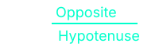
Step 2: Substitute the known values.
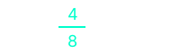
Step 3: Simplify the fraction.
sin A = 0.5
Step 4: Find the angle A using the inverse sine function (sin⁻¹).
A = sin⁻¹(0.5) = 30°
The Cosine Ratio (cos)
The cosine of an angle (abbreviated as cos) is a fundamental geometric ratio. It divides the adjacent side length by the hypotenuse length.
For the following triangle:
Formula:
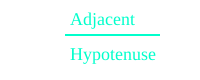
Example Calculation
Calculate the cosine of angle A
Step 1: Write the cosine formula.
Step 2: Substitute the known values.
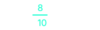
Step 3: Simplify the fraction.
cos A = 0.8
Step 4: Find the angle A using the inverse cosine function (cos⁻¹).
A = cos⁻¹(0.8) ≈ 36.9°
The Tangent Ratio (tan)
The tangent of an angle (abbreviated as tan) is a fundamental geometric ratio. It divides the opposite side length by the adjacent side length.
For the following triangle:
Formula:
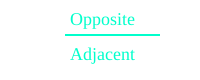
Example Calculation
Calculate the tangent of angle A
Step 1: Write the tangent formula.
Step 2: Substitute the known values.
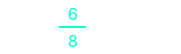
Step 3: Simplify the fraction.
tan A = 0.75
Step 4: Find the angle A using the inverse tangent function (tan⁻¹).
A = tan⁻¹(0.75) ≈ 36.9°
Finding Sides Using Trigonometric Ratios
Unknown side lengths in a right-angled triangle can be found using a systematic approach.
Step-by-Step Process
Step 1: Identify the given angle
Locate the angle θ (theta) in the triangle.
Step 2: Label the sides
Label H (hypotenuse), O (opposite), A (adjacent).
Step 3: Choose the correct ratio
sin θ = O/H
cos θ = A/H
tan θ = O/A
Use SOH CAH TOA to select the ratio that uses the known and unknown sides.
Example: Finding a Missing Side
Find the length of the opposite side in a right-angled triangle with a hypotenuse of 10 cm and an angle of 30°.
Step 1: Identify the given angle (30°) and label the sides.
Step 2: Choose the correct ratio. We know the hypotenuse and want the opposite side. Use sine.
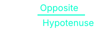
Step 3: Substitute the known values.
sin 30° = 0.5
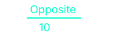
Step 4: Solve for the unknown side.
Opposite = 0.5 × 10 = 5 cm
To find a missing side, always use the trigonometric ratio that connects the known side and the unknown side. To help figure out which ratio to use, remember the pneumonic SOH CAH TOA
This pneumonic, helps remember which ratio to use:
Sin = Opposite ÷ Hypotenuse
Cos = Adjacent ÷ Hypotenuse
Tan = Opposite ÷ Adjacent
Angles of Elevation and Depression
In trigonometry, the angle of elevation and angle of depression are used to measure the angle between a horizontal line and a line of sight when looking up or down at an object.
Key Definitions:
• Angle of Elevation: The angle measured upward from the horizontal line to the line of sight.
• Angle of Depression: The angle measured downward from the horizontal line to the line of sight.
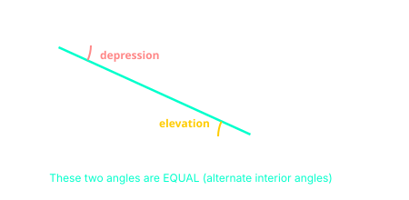
In the diagram above, an observer at point A looking down at an object forms an angle of depression. From the object's perspective looking up at the observer, the angle of elevation is formed. Because the two horizontal lines are parallel, these angles are alternate interior angles and are therefore equal.
NB: Angle of Elevation = Angle of Depression. This is always true when the observer and the object are at different heights and the horizontal lines are parallel.
The examples below cover the most frequently asked exam questions. Be sure to understand the decisions made at each of the steps so that you can apply the same process to any question involving angles of elevation and depression.
Example 1: Finding the Height of a Building
A person stands 40 m away from the base of a building. The angle of elevation to the top of the building is 35°. Find the height of the building.
Step 1: Identify the trigonometric ratio to use.
We know the adjacent side (40 m) and want the opposite side (height). The ratio that connects the opposite and adjacent sides is the tangent. So we use tangent.
Step 2: tan 35° = 0.700 (from calculator or table).
0.700 = h ÷ 40
Step 3: Solve for the height.
h = 0.700 × 40 = 28 m
Answer: The height of the building is 28 m.
Example 2: Finding the Distance from an Object
From the top of a lighthouse 80 m above sea level, the angle of depression to a boat is 20°. Find the horizontal distance of the boat from the base of the lighthouse.

Step 1: Recognize that the angle of depression from the lighthouse equals the angle of elevation from the boat.
Therefore, the angle at the boat looking up to the lighthouse is also 20°.
Step 2: Identify the trigonometric ratio to use.
We know the opposite side (80 m) and want the adjacent side (distance). Use tangent.
Step 3: tan 20° = 0.364 (from calculator or table).
0.364 = 80 ÷ d
Step 4: Solve for the distance.
d = 80 ÷ 0.364 = 219.8 m
Answer: The boat is approximately 220 m from the base of the lighthouse (3 s.f.).
Example 3: Finding the Angle of Elevation
A 10 m ladder leans against a vertical wall. The foot of the ladder is 4 m from the base of the wall. Find the angle that the ladder makes with the ground.

Step 1: Identify the trigonometric ratio to use.
We know the adjacent side (4 m) and the hypotenuse (10 m). The ratio that connects the adjacent and hypotenuse sides is cosine. So we use cosine.
cos θ = 4 ÷ 10 = 0.4
Step 2: Find the angle using inverse cosine.
θ = cos⁻¹(0.4) = 66.4°
Answer: The ladder makes an angle of approximately 66.4° with the ground.